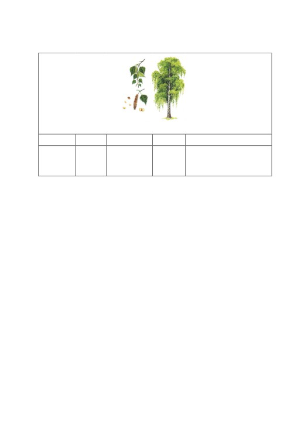
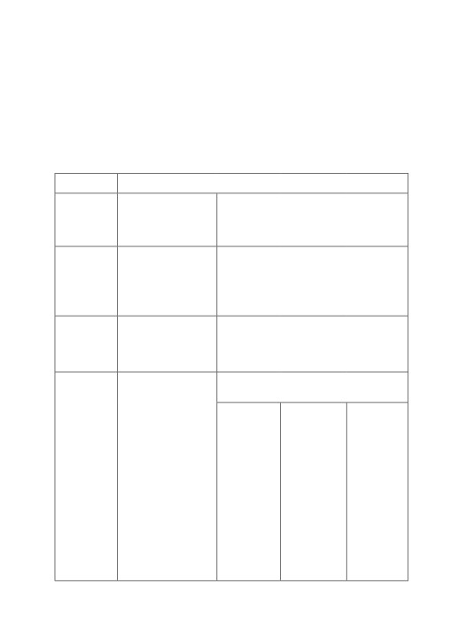
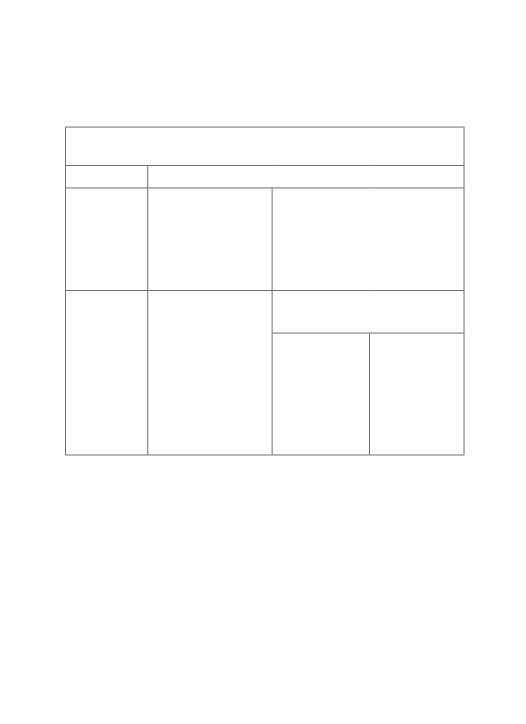
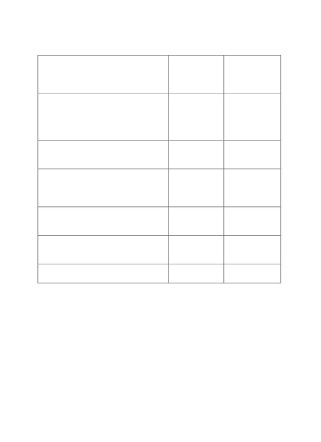
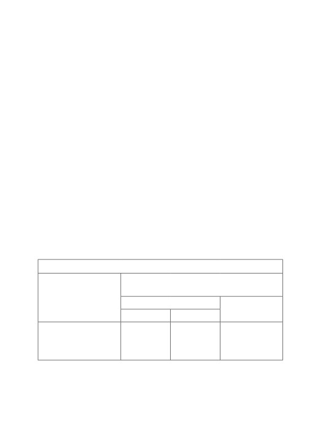

ЧАСТЬ ПЕРВАЯ
тема 1
НАУКА ЛЕКСИКОЛОГИЯ.
СЛОВО КАК ЕДИНИЦА ЛЕКСИКИ
Лексикология — раздел науки о языке, изучающий словар-
ный состав языка, т. е. лексику. в лексикологии слово изучается
не только отдельно, но и в связи с другими словами.
Литературная лексика является основой современного
русского литературного языка и отличается нормированностью
в отличие от диалекта и жаргона. литературная лексика — это
не только лексика художественных произведений, но и язык теа-
тра, кино, школы, газет, журналов, радио и телевидения. в то же
время на литературном языке разговаривают на работе, в обще-
ственных местах, в кругу друзей. то есть литературный язык —
не только язык письменной культуры, но и живой язык культур-
ных людей.
Национальная лексика включает всю лексику: и профессио-
нальную, и диалектную, и жаргонную, и литературную (см. схему).
Слово — важнейшая единица языка, которая служит для наиме-
нования предметов, процессов и свойств. основные признаки слова:
1) лексическое значение;
2) единое ударение;
3) цельнооформленность (слово принадлежит к определен-
ной части речи и имеет определенные грамматические формы);
4) отдельность (мы можем определить границы слова: в уст-
ной речи при помощи пауз, а на письме — при помощи пробелов),
НАЦИОНАЛЬНАЯ ЛЕКСИКА
все слова национального языка
↑
↑
↑
↑
литератур-
диалектная
Жаргонная
профессио-
ная
лексика
лексика
нальная
лексика
лексика
слова, которые
слова, которые ис-
соответству-
употребляют
пользуют представи-
слова, которые
ет нормам
жители опре-
тели определенной
используют лю-
языка
деленного ре-
социальной группы,
ди определен-
гиона
например, студенты,
ной профессии
школьники, молодежь
игра в ляпки
баранка — руль
и др.
(на урале) =
в речи шоферов
игра в салочки
шпора — шпаргалка
шапка — заго-
(в Москве)
физра — физкультура
ловок в речи из-
дателей
5) непроницаемость (внутрь слова нельзя вставить другое
слово);
6) идиоматичность (значение слова не складывается из сум-
мы значений его частей — морфем. например, слово водопад
не означает любое падение воды).
Этот перечень признаков неполный. при изучении лексиколо-
гии сущность слова будет раскрыта глубже и полнее.
слово может вступать с другими словами в парадигматические
и в синтагматические отношения.
Парадигматические отношения — это те отношения, которые
объединяют единицы языка в группы по определенному признаку.
таким признаком может быть общая тема — слова могут делить-
ся на тематические группы, объединенные общей темой (профес-
сии: доктор, инженер, водитель, преподаватель; транспорт: ав-
тобус, трамвай, маршрутка и др.). кроме темы общим признаком
группы слов может быть, например, их значение, тогда слова об-
разуют синонимические ряды (большой — крупный —огромный;
добрый — сердечный — добросердечный), а также антонимиче-
ские ряды (белый ↔ черный, хвалить ↔ ругать). отношения слов
во всех этих группах называются парадигматическими.
слова вступают и в синтагматические отношения, кото-
рые наблюдаются в предложении (Ребенок спит. Преподаватель
объясняет урок) и словосочетании (зеленый лист, сидеть тихо).
итак, взаимоотношения слов очень разнообразны. в целом они
образуют сложную лексическую систему. одно и то же слово может
входить в разные группы, что подтверждает системность лексики.
тема 2
ПОНЯТИЕ И СЛОВО. ЗНАЧЕНИЕ СЛОВА
слово имеет форму (план выражения) и значение (план со-
держания). Форма слова передается в устной речи при помощи
звуков, а на письме — при помощи букв. значение слова (лексиче-
ское значение) — это соотнесенность формы слова с определен-
ным предметом или явлением действительности. например, все
формы слова берёза (берёза, берёзы, берёзу, берёзой и др.) объ-
единены одним лексическим значением: «лиственное дерево с бе-
лым стволом и сердцевидными листьями». сам предмет, который
существует в реальном мире, не входит в структуру лексического
значения и называется денотат. то есть настоящая береза, кото-
рая растет в лесу — это денотат.
Понятие (сигнификат) — это обобщенное представление
о предмете в сознании людей, основное содержание слова (т. е. на-
ше представление о березе как о дереве с белой корой). в понятии
отражаются не все, а только основные качества, которые отлича-
ют один предмет от другого: форма, цвет, размер, функция и др.
например, у птиц это крылья, клюв, а у рыб — плавники и хвост,
и др. итак, понятие является самым главным элементом значения
слов. за понятием закрепляется наименование — слово.
для слова основной функцией является номинативная функ-
ция: слова называют предметы, их признаки, количество, дей-
ствия, процессы.
и лексическое значение, и понятие — существуют в созна-
нии человека. но важно знать, что понятие совпадает у людей, го-
ворящих на разных языках, а лексическое значение может быть
специфично для каждого языка. кроме того, понятие более научно
и точно, а лексическое значение часто отражает только самые про-
стые, бытовые признаки. несколько слов могут обозначать одно
понятие, например, железная дорога.
для определения лексического значения слова необходимо:
1) выяснить его связь с понятием; 2) установить связь с предме-
том; 3) установить связь с другими словами контекста. толкование
слова в словаре — это и есть его значение.
значение слова состоит из разных сем, т. е. компонентов зна-
чения: категориально-грамматической семы — кгс (предмет,
действие, признак), категориально-лексической семы — клс
(мебель, родство, растение, движение и т. п.), т. е. главной семы,
а также дифференциальных сем — дс — различительных, вто-
ростепенных, например, «быстро», «острый», «на двух ногах»
и т. п.). в значениях некоторых слов имеется и коннотативная
сема — кс. Это сема оценки и эмоционального отношения гово-
рящего к тому, о чем он говорит: положительного — со знаком (+)
или отрицательного — со знаком (-). например, плохой (-), лю-
бить (+), доченька (+), бездельник (пренебр. (-)) и т. п. Эмоцио-
нальная оценка отмечается в словарях стилистическими помета-
ми: иронич., презр., пренебр. и др.
у слова может быть несколько значений. Основное значение —
это то значение, которое менее других зависит от контекста, наибо-
лее частотно в употреблении. в толковых словарях современного
русского языка основное значение обычно дается первым.
Неосновное значение — это то значение, которое обусловлено
контекстом, зависит от него и в словаре дается не первым, а под
цифрой 2, 3, 4…

лексическое значение слова берёза
«лиственное дерево с белой корой»
кгс
клс
дс1
дс2
кс
предмет
дерево
лиственное
с белой
+
корой
(береза — символ
молодости и красоты)
тема 3
ОСНОВНЫЕ ТИПЫ
ЛЕКСИЧЕСКИХ ЗНАЧЕНИЙ СЛОВ
лексические значения слов обладают достаточной самостоя-
тельностью. их можно по-разному классифицировать.
по спо со бу номи нац ии (характеру связи с предметами
и явлениями) выделяется два типа значений: прямое и переносное.
Прямым значение называется потому, что слово прямо указывает
на предмет. основное значение всегда прямое: Нос — 1. Часть лица
человека и животного. Непрямое (переносное) значение появляется
в результате переноса наименования с одного предмета на другой
предмет. переносные значения вторичны: Нос корабля. Каменное
сердце. Счастливый билет. заработать на хлеб (пропитание).
п о про исхожден ию лексические значения бывают мо-
тивированные и немотивированные. Мотивированным называ-
ется значение, в котором отражен признак, положенный в основу
наименования. например, ягода черника называется так потому,
что она черного цвета. если мы не можем объяснить, почему пред-
меты, действия, признаки называются именно так, тогда их значе-
ния немотивированные.
по врем ен и возни к новен ия выделяют первичное
значение (которое возникло раньше) и вторичные значения (воз-
никли позже). например, первичное значение слова морда — «пе-
редняя часть головы животного». позже у этого слова появилось
еще одно, вторичное значение, в котором есть отрицательная кс.
слово морда может употребляться по отношению к человеку, если
его лицо грязное или он сам нам неприятен. Это вторичное значе-
ние является стилистическим синонимом слова лицо.
по возможности лексической сочетаемости
(с другими словами) выделяются свободные и несвободные значе-
ния. если сочетаемость у слова широкая, то его значение — сво-
бодное, а если узкая — несвободное.
несвободные значения могут быть разными:
1. Фразеологически связанные значения реализуются только
в узком кругу слов. например, карие глаза; горючие слёзы; бар-
хатный сезон (а не осень); потупить взор, голову (а не руку, но-
гу); заклятый враг; проливной дождь и др. выделенные слова
нельзя употреблять в сочетании с другими словами.
2. Синтаксически обусловленным называют такое значение,
которое появляется у слова при выполнении необычной для него
функции в предложении: Он хитрая лиса. слово лиса в значении
«животное» чаще бывает подлежащим или дополнением. в функ-
ции сказуемого оно приобретает значение «хитрый человек».

разновидностью синтаксически обусловленных значений яв-
ляются конструктивно ограниченные. они реализуются только
в условиях определенной синтаксической конструкции (требую-
щей определенного падежа). например, следовать + 5 п. ↔ сле-
довать + 3 п.: следовать за отцом (идти за отцом) ↔ следовать
отцу (поступать как отец).
типология лексиЧескиХ знаЧений
критерий
типы лексиЧескиХ знаЧений
способ но-
прямое
переносное
минации
прямо указывает
возникло в результате переноса
на предмет
с одного предмета на другой
нос человека
нос корабля
происхож-
мотивированное
немотивированное
дение
из значения слова
из значения непонятно, почему слово
понятно, почему
так названо
оно так названо
чёрный
черника
время воз-
первичное
вторичное
никнове-
возникло
возникло позже
ния
раньше
Вымой свою морду!
морда коня
лексиче-
свободные
несвободные
ская соче-
широкая
узкая сочетаемость
таемость
сочетаемость
фразео-
синтакси-
конструк-
коричневая
логически
чески об-
тивно
куртка
связанные
условлен-
ограни-
только
ные
ченные
с опреде-
в опреде-
только
ленными
ленной
в опреде-
словами
функции
ленной
карие глаза
в предложе-
конструк-
нии (напри-
ции
мер, сказуе-
следовать
мого)
отцу
Ты — лиса!
следовать
за отцом
тема 4
ОДНОЗНАЧНОСТЬ И МНОГОЗНАЧНОСТЬ
в русском языке есть слова, которые имеют одно значение, они
называются однозначными. Это прежде всего термины, названия
инструментов, животных, растений, тканей и т. п.: берёза, диссер-
тация, гитара, грустить, хвалить, тюль, тополь и др.
немало слов имеет два и более значений. они называются
многозначными. Многозначность (полисемия) — это свойство
слов иметь одновременно несколько значений. большинство слов
в языке многозначно: рука, корень, грязь, левый и др. например,
слово гулять — многозначное: 1. совершать прогулку (гулять
с детьми). 2. перемещаться в разных направлениях (по комнате
гуляет ветер). 3. быть свободным от работы, иметь выходной день
(Сегодня я гуляю, у нас выходной) — разг. 4. веселиться (завтра
будем гулять на свадьбе) — разг. у слова идти в словаре ожегова
выделено 26 значений. в с е з н а ч е н и я в многозначном слове
имеют какую-либо общую сему, с в я з а н ы между собой, образуя
сложное семантическое единство, которое называется семантиче-
ской структурой слова.
Многозначность помогает экономить языковые средства: че-
ловек хочет знать все больше и больше, мир меняется, наука
развивается, а число слов ограничено. благодаря многозначности
можно использовать ограниченное число слов, но э к о н о м н о
выражать гораздо большее число значений. когда одно слово име-
ет несколько значений — это у д о б н о, так работает наше мыш-
ление. Мы понимаем новое через известное и храним в одной упа-
ковке информацию о разных, но похожих явлениях.
Многозначным слово становится не сразу: некоторые значения
появляются в процессе функционирования слова в речи, затем вхо-
дят в лексическую систему. при этом иногда первичное значение
слова становится менее употребительным, а вторичные значения
могут становиться основными. например, сначала слово красный
означало «красивый» (красная девица), а позже у него появилось
значение «цвета крови». сейчас именно значение «цвета крови»
стало основным.
тема 5
РАЗВИТИЕ ЗНАЧЕНИЙ СЛОВА
значение слова может изменяться. развитие значений слова —
это изменение с течением времени его значений. на развитие зна-
чений слов большое влияние оказывают внеязыковые причины
(социальные, культурные, исторические и другие). такие измене-
ния называются семантическими изменениями.
новые значения появляются разными путями. возможны сле-
дующие в и д ы с е м а н т и ч е с к и х и з м е н е н и й:
1. Сужение значения — это уточнение значения слова, в резуль-
тате которого слово используется для обозначения б о л е е у з к о й
гру ппы пр едмето в, чем раньше. например, слово платье
раньше означало любую «одежду, которую носят поверх белья» —
и мужскую и женскую. сейчас значение этого слова — «женская
одежда особого покроя». произошло сужение значения слова.
2. Расширение значения — это изменение значения слова, в ре-
зультате которого оно обозначает б о л е е ш и р о к у ю г р у п п у
пр едм ето в, чем раньше. например, слово неделя раньше озна-
чало день отдыха (от глагола не делати, т. е. «не работать»). позже
этот день стал называться воскресенье, а слово неделя стало озна-
чать не один день, а период времени из семи дней. произошло рас-
ширение значения слова.
3. Метафора — это возникновение нового значения путем пе-
реноса наименования одного предмета на другой п о с х о д с т в у.
сходство, которое лежит в основе метафорического переноса, мо-
жет быть разным. приведем некоторые примеры:
- сходство п р и з н а к о в предметов: тёплый чай → тёплый
взгляд, колючий куст → колючий человек, лиса (животное) → лиса
(хитрый человек), злой человек → злой ветер, золотое кольцо →
золотые волосы;
- сходство ф у н к ц и й, которые выполняют предметы: за-
жигать спичку → зажигать слушателей на концерте; двор-
ник (работник, поддерживающий чистоту во дворе) → дворник
автомобиля
(устройство, которое чистит стекло автомобиля
от снега и дождя);
- сходство ф о р м ы предметов: крыло птицы → крыло само-
лета, нарисовать круг → спасательный круг;
- сходство м е с т о п о л о ж е н и я: подошва обуви → подошва
горы и др.
в результате метафоры всегда возникает образ, присутствует
отношение автора к предмету речи, его оценка. так словосочета-
ние золотой человек выражает нашу оценку человека («прекрас-
ный, замечательный»), о котором идет речь, и заставляет подумать
о золоте как о самом дорогом металле. благодаря образности мета-
форы часто используются писателями и поэтами.
4. Метонимия — это возникновение нового значения пу-
тем переноса наименования одного предмета на другой предмет
по см еж но с т и, вовлеченности предметов в одну ситуацию.
при метонимии вторичные значения возникают на основе ассоци-
аций. вот некоторые способы переноса при метонимии:
- м а т е р и а л
→ п р е д м е т из этого материала: хрусталь.
1. ввид стекла (материал); 2. посуда из него (предмет). В шкафу сто-
ит хрусталь (посуда из хрусталя). золото. 1. драгоценный металл
желтого цвета (материал); 2. Монеты или изделия из этого металла.
Она вся в золоте (на ней много украшений из золота).
- п р о ц е с с → р е з у л ь т а т этого процесса: сушка. 1. про-
цесс, в результате которого предмет делается сухим. Сушка овощей
длилась 2 часа. 2. Маленькая, тонкая и очень сухая баранка. Я ку-
пил в магазине вкусные сушки.
- п р о ц е с с
→ и н с т р у м е н т этого процесса: упаковка.
1. процесс складывания в пакет. Упаковка подарков — длительный
процесс. 2. Материал, в который упаковывают. Подарок был в кра-
сивой упаковке.
- п р е д м е т
→ с о д е р ж и м о е этого предмета: блюдо.
1. большая тарелка для подачи кушанья. Глиняное блюдо. 2. куша-
нье. бабушка приготовила вкусное блюдо — плов по-узбекски.
- н а з в а н и е м е с т а → люди, которые находятся в этом ме-
сте: аудитория. 1. комната для занятий, лекций. Первое занятие
будет в аудитории 304. 2. слушатели лекции. аудитория внима-
тельно слушала преподавателя.
- д е й с т в и е → м е с т о действия: проезд. 1. процесс, обо-
значающий передвижение на чем-либо. Проезд в трамвае стоит
26 рублей. 2. Место, где можно проехать. Между этими домами
узкий проезд.
- п р е д м е т / с в о й с т в о
→ ч е л о в е к, который обладает
этим предметом / свойством: талант. 1. природные способности.
Талант ученого. 2. талантливый человек. Он талант.
- и м я с о б с т в е н н о е → п р о и з в е д е н и е / п р е д м е т,
который создал / открыл этот человек: рентген. 1. Фамилия не-
мецкого физика (вильгельм рентген). В. Рентген — немецкий фи-
зик. 2. излучение, которое он открыл. больной поехал в больницу
на рентген.
- д е й с т в и е → ч е л о в е к, выполняющий это действие: ру-
ководство. 1. деятельность руководителя. Я учился под руковод-
ством опытных преподавателей. 2. руководители. Руководство
предприятия решило всех уволить.
основные отличия метафоры от метонимии вы можете видеть
в следующей таблице.
отлиЧие
МетаФора
МетониМия
1. тип пе-
перенос по с х о д с т в у
перенос по смежности
реноса
(предметы должны быть
(предметы н е п о х о -
чем-то п о х о ж и)
ж и, но находятся в о д -
золотое кольцо —
ной ситуации)
желтого цвета
золото. 1. Металл.
золотые волосы —
2. украшения из этого
желтого цвета
металла
2. допол-
содержит о б р а з
нет образа
нительные
заяц. 1. Животное.
характери-
2. пассажир без билета
стики
5. Синекдоха — это вид метонимии, которым называется пе-
ренос значения с одного предмета на другой по признаку ко л и -
че ст вен ного отношения между ними. Можно выделить сле-
дующие виды синекдохи:
- ч а с т ь вместо ц е л о г о: целый предмет называется по од-
ной его части. Красная Шапочка (= девочка в красной шапочке);
Синяя борода (= человек с синей бородой);
- е д и н с т в е н н о е ч и с л о вместо м н о ж е с т в е н н о г о:
С каждым годом человек (= люди) все хуже относится к природе;
- м н о ж е с т в е н н о е ч и с л о вместо е д и н с т в е н н о г о:
Начальство (= начальник) не разрешает опаздывать;
- б о л е е о б щ е е н а з в а н и е (р о д о в о е) вместо в и д о -
во го: Машина (= компьютер) считает быстрее человека;
- б о л е е к о н к р е т н о е н а з в а н и е (в и д о в о е) вместо
более общего
(р о д о в о г о): береги копейку! (= деньги).
итак, значения слов могут становиться ýже или шире, а ино-
гда полностью изменяются. Это говорит о том, что язык живой,
в нем происходят постоянные изменения, он развивается, как сама
жизнь, отражая ее, как в зеркале.
тема 6
ОМОНИМЫ
лексическими омонимами называются два или более р а з -
ных по знач ени ю слова, которые оди нако во пиш у т-
с я, з в у ч а т и относятся к о д н о й и той же ч а с т и р е ч и:
например, ключ1 (от двери), ключ2 (родник). Омонимия — это лек-
сическое явление совпадения по звучанию и написанию разных
слов, которые не имеют общего значения.
омонимы появились в языке по разным п р и ч и н а м.
1. самой распространенной причиной появления омонимов
является р а с х о ж д е н и е з н а ч е н и й м н о г о з н а ч н о г о
сл ова. конечно, этот процесс происходит постепенно. напри-
мер, значения многозначного слова долг (1. обязанность. 2. взятое
взаймы) со временем стали далекими.
2. некоторые омонимы появились благодаря з а и м с т в о в а -
ния м из других языков. например, слово брак1 в значении «изъ-
ян» заимствовано из немецкого языка, а слово брак2 в значении
«союз между мужчиной и женщиной» образовано от глагола бра-
ти и является исконно русским. слово норка1 в значении «хищный
пушной зверек из семейства куниц», «мех этого пушного зверька»
заимствовано из финского языка. но есть также русское слово нор-
ка2, которое образовано от слова нора («углубление под землей,
вырытое животным»).
в языке существуют явления, близкие омонимии. кроме абсо-
лютных лексических омонимов бывают относительные омони-
мы:
1. Омофоны (фонетические омонимы) — это слова, которые
звучат одинаково, но имеют разное написание и значение. напри-
мер, гриб ↔ грипп; порог ↔ порок ↔ парок; предать ↔ придать;
плод ↔ плот и др.
2. Омоформы (грамматические или морфологические омони-
мы) — это слова, которые совпадают в звучании и написании только
в отдельных грамматических формах. они могут принадлежать как
к одной части речи, так и к разным. например, глаголы лечить и ле-
теть совпадают в форме первого лица единственного числа: я лечу
(на самолете) ↔ я лечу людей (врач). Числительное три совпадает
с формой повелительного наклонения глагола тереть: три (3) ↔
три (на тёрке). прилагательное молодой в форме именительного па-
дежа мужского рода совпадает с формой предложного падежа жен-
ского рода: молодой (человек) ↔ о молодой (женщине).
3. Омографы (графические омонимы) — слова, которые со-
впадают по написанию, но имеют разное ударение и значение:
хлóпок ↔ хлопóк; мýка ↔ мукá; клéщи ↔ клещú и др.
омонимы и многозначные слова в словаре обозначаются по-
разному.
оМониМы
слова, одинаковые по написанию и звучанию, но разные по значению
абсолЮтные
относительные
абсолютно одинако-
не совсем одинаковы по написанию
вы по написанию
или звучанию
и звучанию
ключ1 ↔ ключ2
омофоны
омоформы
омографы
звучат одина-
звучат и пишутся
пишутся
ково, но пи-
одинаково только
одинаково,
шутся по-
в одной грамма-
но имеют раз-
разному
тической форме
ное ударение
гриб ↔ грипп
лечу (на самолете)
мýка ↔ мукá
↔ лечу (людей)
тема 7
СИНОНИМЫ
Синонимия — один из самых распространенных видов си-
стемных отношений в лексике. Синонимы — это слова, близкие
по значению, но разные по форме и звучанию. синонимы могут
отличаться как отенками значений, так и стилистической при-
надлежностью. синонимами считаются слова, принадлежащие
к одной части речи. так, зеленый, изумрудный, малахитовый, бо-
лотный — синонимы, а зелень и болотный — нет. Чаще всего си-
нонимы наблюдаются среди имен прилагательных и глаголов.
существуют различные типы синонимов.
по с е м а н т и ч е с к о й б л и з о с т и выделяются:
1. Полные (абсолютные) синонимы — это слова, полностью
совпадающие по значению: языкознание — лингвистика, без-
брежный — бескрайний. Эти случаи в языке крайне редки. обыч-
но полными синонимами являются научные термины, и хотя бы
один из терминов синонимической пары принадлежит к заимство-
ванным: вселенная — космос, азбука — алфавит. полными сино-
нимами чаще всего являются существительные.
2. Частичные синонимы — это слова, которые частично со-
впадают по значению. они делятся на семантические и стилисти-
ческие синонимы. Семантические синонимы различаются от-
тенками значения, например, прекрасный, чудесный, прелестный.
Стилистические синонимы имеют различную стилистическую
окраску: рука, лапа (разг.); есть, трапезничать, кушать, жрать,
лопать. иногда синонимы могут различаться и тем и другим:
и оттенками значения, и стилем (легко, просто, несложно, эле-
ментарно).
по степени з а в и с и м о с т и о т к о н т е к с т а существуют:
1. Контекстуальные (речевые) синонимы — слова, которые
являются синонимами только в контексте, их нельзя найти в сло-
варе синонимов. например, девочка — малышка; ропот — шум.
2. Языковые синонимы. они независимы от контекста и ча-
сто употребляются как однородные члены предложения. они есть
в словаре синонимов: друг — товарищ; крепкий, прочный, твер-
дый.
синонимы возникают в языке постоянно. Это происходит
по разным причинам:
1. Часто синонимы появляются благодаря з а и м с т в о в а н и -
ям из других языков. например, было русское слово самолёт,
а потом пришло заимствованное из английского слово аэроплан.
иногда наоборот: сначала используется заимствованное слово,
а затем появляется русское.
2. синонимы могут возникать и в результате и с п о л ь з о в а -
ния р азны х афф и ксов для одних и тех же корней: вспом-
нить — припомнить, вспомянуть (разг.); дать, передать, при-
дать, сдать и др.
3. п о я в л е н и е у слов п е р е н о с н ы х з н а ч е н и й дает
возможность слову вступать в новые синонимические отношения.
например, звёздный приобрело переносное значение «особен-
но успевающий». звёздный в этом значении синонимично слову
счастливый. например, звёздная пора артиста.
лексическая с и н о н и м и я тесно связана с м н о г о з н а ч -
но ст ью. если слово имеет несколько значений, связанных ос-
новной семой, то в р а з н ы х з н а ч е н и я х это слово может
иметь и р а з л и ч н ы е с и н о н и м ы. например, слово круглый
имеет три основных значения и каждой лексеме синонимичны
разные слова. так, первое значение этого слова — «имеющий фор-
му круга», в этом значении синонимом слова круглый будет шаро-
образный: круглая форма — шарообразная форма. второе значе-
ние слова круглый — «полный, совершенный», поэтому в этом
случае будет другой синоним: круглый отличник — абсолютный
отличник. еще одно значение слова круглый — «весь, целый»,
и поэтому к словосочетанию круглый год синонимичным будет
целый год.
следовательно, синонимы могут иметь р а з н у ю с о ч е -
таемость. например, слово выразить сочетается со словами

чувство, отношение, любовь. а слово-синоним сформулировать
с этими словами не сочетается. Сформулировать можно правило,
но не чувство или отношение.
синониМы
слова, близкие по значению, но разные по форме и звучанию
критерий
типы
1. зависи-
контекстуальные
языковые
мость от кон-
(реЧевые)
не зависят от контекста,
текста
являются синонима-
есть в словарях
ми только в контексте,
друг = товарищ
нет в словарях
девочка = малышка
2. семанти-
полные
ЧастиЧные
ческая бли-
(абсолЮтные)
частично совпадают по значению
зость
полностью одинако-
сеМанти-
стилисти-
вы по значению
Ческие
Ческие
языкознание =
различаются
различаются
лингвистика
оттенками
стилистической
значения
окраской
грустный =
кушать =
печальный
жрать
два и более лексических синонима образуют синонимический
ряд. в этом ряду есть слово, наиболее употребительное и ней-
тральное по стилю. Это основное слово называется доминантой.
например, в синонимическом ряду думать, размышлять, мыс-
лить доминантой является слово думать. а в ряду добрый, сер-
дечный, душевный — доминанта добрый.
синонимические ряды могут состоять из разного количества
слов. иногда это два слова, а иногда и более десяти слов.
в синонимическом ряду могут быть слова, относящиеся к разным
стилям речи: лик (высокое), лицо (нейтральное), морда (простореч-
ное). также в синонимический ряд могут входить и фразеологизмы.
например, слово мало имеет синонимы-фразеологизмы кот напла-
кал, с гулькин нос.
существуют словари синонимов. в словаре под редакцией
з. е. александровой 9 тысяч синонимических рядов. выбору си-
нонима, нужного в данном конкретном случае, помогает работа
со словарями, в которых указаны отличия синонимов друг от дру-
га, а также хорошее знание языка, большой запас слов.
тема 8
АНТОНИМЫ
Антóнимы — это слова о д н о й ч а с т и р е ч и, различ-
ные по звучанию и написанию и имеющие прямо противополож-
ные лексические значения: правда ↔ ложь, добрый ↔ злой, го-
ворить ↔ молчать. Чаще всего антонимы встречаются в числе
глаголов, прилагательных и существительных.
существуют различные типы антонимов.
по степени з а в и с и м о с т и о т к о н т е к с т а, антонимы,
как и синонимы делятся на два типа.
1. Контекстуальные (речевые) антонимы — слова, которые
являются антонимами только в контексте, их нельзя найти в слова-
ре антонимов. например, хорошо ↔ дурно; вода ↔ камень.
2. Языковые антонимы независимы от контекста и всегда ука-
зываются в словаре антонимов: весёлый ↔ грустный.
по ст руктуре антонимы бывают однокоренными, они
образуются при помощи различных приставок: честный ↔ не-
честный; радостный ↔ безрадостный, революционный ↔ контр-
революционный, военный ↔ антивоенный, войти ↔ выйти и раз-
нокоренными: жизнь ↔ смерть, горе ↔ счастье, богатство ↔
бедность.
одно и то же многозначное слово может вступать в разные
антонимические пары. например, слово глубокий: 1) глубокий ↔
неглубокий (колодец), 2) глубокий ↔ некрепкий (сон).
два и более слова, противоположных по значению, образуют
антонимический ряд: хвалить ↔ ругать, осуждать.
антониМы
слова, противоположные по значению, разные по форме и звучанию
критерий
типы
1. зависимость
контекстуальные
языковые
от контекста
(реЧевые)
не зависят от контекста,
являются антонимами только
есть в словарях
в контексте, нет в словарях
весёлый ↔ грустный
вода ↔ камень
2. структура
однокоренные
разнокоренные
слова с одинаковым корнем
слова с разными кор-
радостный ↔ безрадостный
нями
богатство ↔ бедность
ЧАСТЬ ВТОРАЯ
тема 9
ОСНОВНЫЕ ЭТАПЫ ФОРМИРОВАНИЯ
ЛЕКСИКО-СЕМАНТИЧЕСКОЙ СИСТЕМЫ
РУССКОГО ЯЗЫКА
русский язык относится к с л а в я н с к и м языкам. в эту груп-
пу входят также украинский, белорусский, польский, чешский,
болгарский, словенский, словацкий и другие языки.
лексика современного русского языка формировалась в тече-
ние долгого времени. до VII в. существовал общеславянский язык,
который послужил основой для всех славянских языков, а еще
раньше, до него — индоевропейский праязык. лексика русско-
го языка состоит из исконно русской и заимствованной лексики.
в лексикологии выделяются два основных пути развития словар-
ного состава:
1) пополнение слов исконно-русских;
2) заимствования из других языков.
лексика русского языка
Исконно русская лексика
Заимствованная лексика
(слова из других языков)
собственно русские слова с XIV в.
восточнославянские слова с VI-VII вв.
общеславянские слова до VI-VII вв.
индоевропейские слова
Исконная лексика — это индоевропейские, общеславянские,
восточнославянские и собственно русские слова.
слова индоевропейского происхождения — самые древние
из исконно русских слов. они имеют соответствия в других индо-
европейских языках. Часто это термины родства (мать, брат, дочь,
сын), названия животных (мышь, волк, овца), действий (брать,
дать, видеть) и др.
в словах общеславянского происхождения можно выделить
несколько лексико-семантических групп:
1) названия частей тела человека (голова, лицо, лоб, нос) и жи-
вотных (лапа, рог);
2) названия отрезков времени (день, ночь, утро, вечер, зима,
весна);
3) слова, обозначающие явления природы (буря, дождь, снег,
ветер);
4) названия растений и их частей (ветка, дерево, береза, ряби-
на, ель, сосна, горох, тыква, слива);
5) названия домашних и диких животных и птиц (бык, корова,
коза, петух, ворона, воробей);
6) названия орудий и предметов труда (весло, ведро, вилы, граб-
ли, молот);
7) части жилища (стена, пол, печь, порог);
8) продукты питания (сыр, каша, квас, сало);
9) признаки (старый, белый, черный, немой, весёлый, злой);
10) действия (ткать, сеять, варить, делить, знать);
11) числа (пять, семь, сто);
12) абстрактные наименования (вера, воля, вина, добро), и др.
именно эти слова являются основой словаря русского языка.
Восточнославянскими, или древнерусскими, называются
слова, которые начиная с VI-VII вв. возникли в языке восточных
славян (украинцев, белорусов и русских). в составе восточносла-
вянской лексики, которая появилась в это время, также можно вы-
делить несколько лексико-семантических групп:
1) термины родства (дядя, племянник, падчерица);
2) названия животных и птиц (собака, кошка, белка, снегирь,
жаворонок, коршун);
3) названия людей по профессии (повар, сапожник, мельник);
4) признаки (коричневый, дешевый, бурый, сизый, дремучий,
зоркий, ледяной);
5) действия (извинить, кипятить, ругаться);
6) числа (сорок, девяносто);
7) временные периоды (сегодня, теперь), и др.
Собственно русскими называются все слова, которые появи-
лись в языке уже тогда, когда он стал языком русской народно-
сти после того, как в XIV в. восточнославянский язык распался
на украинский, белорусский и русский. собственно русские сло-
ва выражают понятия, связанные с появлением новых предметов
и явлений, с развитием науки, культуры, техники. собственно рус-
ская лексика формировалась на базе общеславянских и восточнос-
лавянских слов различными способами русского словообразова-
ния. есть признаки, по которым можно отнести слово к собственно
русской лексике:
1) существительные с суффиксами -чик-, -щик-, -льщик-, -к-,
-ность-: каменщик, листовка, осторожность, грусть;
2) прилагательные с суффиксами -чив-, -лив-, -чат-: разговор-
чивый, удачливый, рассыпчатый;
3) глаголы, образованные приставочно-суффиксальным спосо-
бом и отыменные глаголы: разбежаться, чаевничать;
4) наречия на -о, -е: колюче, смело, кропотливо;
5) сложносокращенные слова: вуз, домработница, зарплата.
собственно русская лексика активно пополняется в настоящее
время.
тема 10
ЗАИМСТВОВАННЫЕ СЛОВА
В РУССКОМ ЯЗЫКЕ
в разные годы в русский язык попадали слова из других язы-
ков. Это было возможным при экономических, политических,
культурных связях с другими странами.
выделяются две группы заимствований: из славянских и из не-
славянских языков. Славянские заимствования — из старосла-
вянского языка, из польского, чешского, украинского и других язы-
ков. Неславянские заимствования — из греческого, латинского,
немецкого, французского, английского и мн. др.
заимствования — это незначительная часть лексики русского
языка (около 10 %), но в публицистическом и научном стиле они
встречаются чаще, чем в разговорном. Чаще всего иноязычные
слова попадают в русский язык как наименование новой вещи, так
как придумать новое слово всегда сложнее, проще его заимство-
вать. в языке вместе с заимствованными словами могут употре-
бляться и собственно русские синонимы, обозначающие одно и то
же понятие: ввоз и экспорт, вывоз и импорт, языкознание и линг-
вистика.
заимствования могут быть непосредственные и опосредо-
ванные. при непосредственном заимствовании слово попадает
в русский язык сразу из языка-источника. при опосредованном за-
имствовании существует язык-посредник. например, слово кар-
та (греческого происхождения) в русский язык попало через ла-
тинский, итальянский, польский языки.
заимствованные слова постепенно подчиняются нормам рус-
ского языка: в них происходят фонетические, морфологические
и семантические изменения. они произносятся русскими звуками,
начинают изменяться по падежам и т. д. Это явление называется
освоением.
10.1. Заимствования из славянских языков
самыми ранними были заимствования из старославянско-
го языка, который с XI в. использовался в качестве литературного
письменного языка для перевода греческих богослужебных книг
во время принятия христианства на руси (IX в.). Это был язык
церкви, поэтому его называют также церковнославянским.
из этого языка в русский язык пришли церковные термины:
священник, крест, жертва и др., а также абстрактные понятия: со-
гласие, власть, бессилие, бедствие и мн. др. Чтобы отличать ста-
рославянизмы, надо знать их признаки.
Признаки старославянизмов
старославянизмы имеют фонетические (звуковые), морфоло-
гические и семантические признаки, по которым их можно отли-
чить от исконно русских слов.

фонетические признаки
старославян-
признак
русский язык
ский язык
сочетания -ра-, -ла-, -ре-, -ле- в корне
-ла- → -оло-
злато, глас
золото, голос
-ле- → -оло-
млечный
молочный
-ра- → -оро-
врата, град
ворота, город
-ре- → -ере-
брег, среда
берег, середина
сочетания -ра-, -ла- в начале слова
-ра- → -ро-
равный
ровный
-ла- → -ло-
ладья
лодка
звук в начале слова
е- → о-
един, есень
один, осень
ю- → у-
юродивый
уродливый
а- → я-
агнец, аз
ягненок, я
сочетание согласных жд → ж
надежда,
надежный,
хождение,
хожу, невежа
невежда
сочетание гласных ие → ье
житие, бы-
житье, бытье,
тие, варение,
варенье, пьет
пиет
согласный щ → ч
помощь, осве-
помочь, свеча,
щение, мощь
мочь
морфологические признаки
1. приставки: без- (безгрешный); воз(с)- (вознесение, воспря-
нуть), из-
(извержение), чрез-
(чрезмерный), пре-
(презреть),
пред- (преднамеренный), со- (собирать, совершить) и др.
2. суффиксы:
-ание
(повествование);
-ение
(освещение);
-стви(е) (бедствие), -знь- (жизнь, болезнь), -тв- (битва); -ын(я)
(милостыня, святыня, гордыня); -(й)ц(а) (убийца); -тель (учи-
тель, воспитатель);
-ырь
(поводырь); суффиксы причастий:
-ущ-, -ющ-, -ащ-, -ящ- (говорящий, поющий, скачущий, сидящий),
-ем(ый), -ом(ый), -им(ый) (приемлемый, ведомый, неистребимый,
терпимый); суффиксы превосходной степени прилагательных
-ейш-, -айш- (добрейший, нижайший) и др.
3. Характерные для старославянского языка первые части
сложных слов: благо-, бого-, добро-, зло-, долго-, едино-, миро-,
суе-, лже-, душе- (благодарность, добродетель, долготерпение,
злопамятность, душеспасительный, суеверие) и др.
4. Характерные для старославянского языка вторые части слож-
ных слов: -любивый, -датель, -детель, -творение, -верие, -питие
(миролюбивый, чаепитие, суеверие, стихотворение) и др.
нельзя путать полностью заимствованное слово и то слово,
в котором заимствована только одна его часть — приставка или
суффикс. например, есть исконно русские слова или слова, заим-
ствованные из неславянских языков, которые имеют суффиксы
или приставки старославянского происхождения, но сами не яв-
ляются старославянизмами. например, прилагательное активней-
ший, в котором корень слова является заимствованным из латин-
ского, а суффикс из старославянского. также слова с суффиксами
-ущ-, -ащ- не всегда являются старославянизмами, как, например,
интегрирующий и др.
семантические признаки
старославянизмы можно узнать по их отвлеченному значе-
нию — часто они обозначают абстрактные понятия (мечта, вселен-
ная, истина) и в основном относятся к религиозной сфере (пророк,
крест, таинство, святой). среди старославянизмов встречаются
также и научные термины (глагол, местоимение, существитель-
ное, дательный (падеж), млекопитающее и др.). Многие старо-
славянизмы остаются книжной лексикой высокого стиля, которую
используют писатели для создания исторической атмосферы или
торжественной эмоциональной окраски (святыня, врата, уста).
другие старославянизмы могут сохранять свои фонетические или
морфологические признаки, но принадлежать к нейтральному сти-
лю. например, слова здравствуй (здороваться), сладкий (солод-
кий), страна (сторона) и др.
10.2. Заимствования из неславянских языков
в русскую лексику в разное время входят греческие, латинские,
тюркские, английские, немецкие, французские и другие слова.
в период общеславянского единства в русскую лексику про-
никли греческие заимствования. Это была б ы т о в а я л е к с и -
к а: блюдо, хлеб, кровать и др. при принятии христианства на руси
в русский язык из греческого вошли слова из области р е л и г и и:
ангел, демон, икона, монах; н а у ч н ы е т е р м и н ы: история, ма-
тематика, философия, грамматика, тетрадь; б ы т о в ы е т е р -
м ин ы: баня, скамья, фонарь и др.
большая часть греческих слов вошла в фонд и н т е р н а ц и о -
на л ьно й лекси к и: алфавит, лексикология, фразеология, ка-
федра, идея, климат, музей, комедия, трагедия, театр и др.
Множество заимствований из латинского языка вошло в рус-
ский язык в XVI-XVIII вв.: школа, аудитория, каникулы, экзамен,
диктант, студент, ректор и др.
сейчас латинский язык считается мертвым языком, на нем уже
никто не говорит, но традиционно он был языком науки, литера-
туры, религии, медицины. поэтому латинские слова так же, как
и греческие, используются в м е ж д у н а р о д н о й т е р м и н о -
ло гии. например, интонация, пунктуация, суффикс.
слова из тюркских языков (узбекского, киргизского, татарско-
го, турецкого и др.) проникли в русский язык в VIII-XIV вв. их
легко узнать, так как обычно в одном слове присутствуют одинако-
вые гласные или гласные одного ряда: барабан, карандаш, сундук,
каблук, халат, караван, мечеть и др. в годы монголо-татарского
нашествия (XIII-XV вв.) в русском языке появились слова из та-
тарского языка: казна, деньга, кирпич, караул и др.
в группе западноевропейских заимствований немало слов
из германских и романских языков.
в группе заимствований из германских языков можно выде-
лить немецкие, английские и голландские.
Немецкие заимствования в основном вошли в русский язык
при петре I (в XVIII в.), который открыл для россии «окно в евро-
пу». Это была л е к с и к а в о е н н о г о д е л а (командир, лагерь,
штаб), а также н а з в а н и я о д е ж д ы
(шляпа, галстук), т е р -
мины торговли
(прейскурант, бухгалтер) и п р е д м е т ы
быта
(бутерброд, пакет).
Голландские слова появились в русском языке также при петре I
в связи с развитием м о р е х о д с т в а: флот, флаг, матрос и др.
влияние английского языка на русский язык оказалось од-
ним из самых устойчивых и коснулось почти каждой сферы.
в XIX-XX вв. из английского языка стала проникать с п о р т и в -
ная лексика
(финиш, старт, спорт, спортсмен, футбол, ба-
скетбол, волейбол, бокс, хоккей, дайвинг, боулинг, матч, сноуборд),
а также б ы т о в а я л е к с и к а
(миксер, тостер, секонд-хенд,
джинсы, свитер, ланч, бойфренд, ток-шоу). в последние годы
из английского языка, который является языком международного
общения, активно заимствуются п о л и т и ч е с к и е т е р м и н ы
(парламент, митинг, саммит, электорат), э к о н о м и ч е с к а я
лексика
(бюджет, брокер, риелтор, продюсер, прайс-лист,
мониторинг, консалтинг, менеджмент), а также слова из области
электроники и лексика компьютерной сферы
(файл, интернет, компьютер, сканер, принтер, ноутбук).
в группе заимствований из романских языков можно выде-
лить французские, итальянские и испанские слова.
Французские слова проникли в русский язык в XVIII-XIX вв.
в этот период, благодаря активным политическим и обществен-
ным связям с Францией, французский язык был официальным
языком русской аристократии. среди французских заимствова-
ний можно выделить наименования б л ю д, п р е д м е т о в б ы -
т а и од еж д ы: котлета, крем, салат, бульон, десерт, мармелад,
пломбир; туалет, кабинет, абажур; блуза, ботинок, пальто, жи-
лет, и др., а также в о е н н ы е т е р м и н ы: марш, атака, салют,
генерал. немало слов из о б л а с т и и с к у с с т в а также пришло
из французского языка: репертуар, балет, роль, актер, пьеса, бе-
льэтаж, партер, антракт, режиссер.
из итальянского языка во все языки, в том числе и в русский,
пришли музыкальные термины: ария, опера, бас, виолончель, ли-
бретто, форте, пиано и др.
заимствования из испанского языка единичны, часто они по-
падали в русский язык через французский: сигара, лимон, банан,
карамель, табак, гитара, серенада и др.
заимствования из китайского языка, вошедшие в русскую речь,
довольно немногочисленны (фэншуй, байховый, женьшень и др.),
несмотря на длительную историю российско-китайских отноше-
ний. даже в приграничных с китаем областях общение с китайцами
традиционно велось на русском языке. поэтому заимствований, ко-
торые пришли из русского языка в китайский, значительно больше:
卢布 [lubu] «рубль», 克瓦斯 [kewasi] «квас», 维德罗 [weiteluo] «ве-
дро», 布拉吉 [bulaji] «платье», 马林浆果 [malinjiangguo] «малина»,
古丝里琴 [gusiliqin] «гусли», 克里姆林宫 [kelimulingong] «кремль»
и др.
во все времена русский язык пополнялся заимствованной лек-
сикой. основные языки, из которых заимствовались слова, можно
увидеть в следующей таблице.
заиМствования
латинский
медицина, роза
греческий
грамматика, стих
романские языки
французский
гардероб, мармелад
итальянский
макароны, балерина
испанский
гитара, сигара
германские языки
английский
файл, спонсор
немецкий
бутерброд, галстук
голландский
матрос, флот
тюркские языки
татарский
деньга, казна
узбекский
каракуль
киргизский
беркут, армяк
турецкий
йогурт, мишень
китайский
женьшень, байховый
монгольский
тайга, богатырь
японский
вата, икебана
арабский
жираф, газель
славянские языки
украинский
борщ, вареники
белорусский
бульба, беларусь
чешский
зáмок, колготки
польский
зразы, сбруя
старославянский
млеко, перст
обычно заимствованное слово можно узнать по определенным
признакам.
общие признаки заимствований
Графические и фонетические признаки
1) буква а в начале слова (ария, абажур, академия, абзац, ан-
гел);
2) буква э в начале слова (эгоизм, энергия, электрический,
этаж, экзамен) — характерна для греческих и латинских заим-
ствований;
3) буква ф в слове (фамилия, факт, фотография, профессор,
фильм, форма);
4) сочетание двух и более гласных в слове (поэт, какао, ра-
дио, пунктуация);
5) сочетание инг в конце корня слова (клининговый, митинг);
6) двойные согласные в корне слова (коллега, сумма, касса);
7) сочетания дж, дз в корне слова (джинсы, пиджак, джаз,
дзюдо, менеджер);
8) одинаковые гласные в слове или гласные одного ряда (та-
ракан, сарафан, сундук, каблук) — характерны для тюркских за-
имствований;
9) сочетания шт, шп (шпион, штамп, штраф) — характерны
для немецких заимствований.
10) сочетания ке, ге, хе в корне слова (ракета, герой, схема) и не-
которые другие.
Грамматические признаки
1) неизменяемость слов (такси, пальто, кофе, мини);
2) невыраженность числа и рода (кофе, кино).
словообразовательные признаки
1) приставки а-, анти-, архи-, интер-, контр-, ин- и др. (амо-
ральный, интернациональный, инфляция, контр-адмирал);
тема 11
ЛЕКСИКА ОБЩЕУПОТРЕБИТЕЛЬНАЯ
И ЛЕКСИКА ОГРАНИЧЕННОГО УПОТРЕБЛЕНИЯ
к общеупотребительной лексике относятся слова, исполь-
зование которых свободно, не ограничено. такие слова доступны
и понятны каждому носителю языка. Эта лексика составляет ос-
нову языка.
в лексике ограниченного употребления можно выделить три
группы: 1) диалектизмы; 2) профессионализмы; 3) жаргонизмы.
11.1. диалектная лексика
диалектизмы — это слова, распространение которых огра-
ничено определенной территорией. в основном это говоры (диа-
лекты) крестьянского населения, в городе употребление диалек-
тизмов невелико. диалектизмы обычно существуют в устной речи,
в официальной ситуации носители диалектов переходят на обще-
народный, литературный язык — язык радио, телевидения, худо-
жественной литературы, образования и т. д.
диалекты отличаются от общенародного национального языка
различными чертами (фонетическими, морфологическими и др.).
поэтому диалектизмы можно подразделить на несколько групп:
фонетические, словообразовательные, морфологические, лексиче-
ские, лексико-семантические и этнографические.
Фонетические диалектизмы отличаются от литературных
вариантов спецификой звучания: жисть вместо жизнь, пашпорт
вместо паспорт. на юге россии (в том числе в Москве) а к а ю т:
[нясу], [ряка] вместо [несу], [река]. а на севере (в том числе на ура-
ле) — о к а ю т: произносят [о] не только под ударением, но и в без-
ударном положении: [молоко], вместо [малако]; [Москва] вместо
[Масква]. для уральского диалекта кроме «оканья» характерны
также наличие долгих гласных (Сааш, пойдем в кино вместо Саш,
пойдем в кино) и частое «проглатывание» гласных (грит вместо
говорит; п’слушай меня вместо послушай меня; слон красоты вме-
сто салон красоты).
Словообразовательные диалектизмы отличаются от литера-
турных вариантов каким-либо особым способом словообразова-
ния, например: евонный вместо его, ихний вместо их, завсегда вме-
сто всегда, телок вместо телёнок, бечь вместо бежать и т. п.
Морфологические диалектизмы отличаются какими-либо
формами слова: например, необычными окончаниями в родитель-
ном и творительном падежах у мене, у тебе вместо у меня, у тебя,
видел своим глазам вместо видел своими глазами и т. п.
Лексические диалектизмы — это слова, известные толь-
ко носителям диалекта, в общенациональном языке они имеют
синонимы. например, гуторить (= говорить), кушак (= пояс),
пимы (= валенки) и др. в уральском диалекте можно также найти
примеры лексических диалектизмов: баскóй (= красивый); робить
(= работать) и др.
Этнографические диалектизмы — это слова, называющие
предметы, известные только в определенной местности. они
не имеют синонимов в общенациональном языке. обычно это
предметы быта, одежда, блюда и т. д. например, драники (осо-
бые оладьи из картофеля), рушник (вышитое полотенце) и др.
слова, ограниченные территорией употребления, вызывают
трудности при их понимании у людей из других мест жительства,
а также при переводе на иностранный язык. поэтому диалектизмы
не рекомендуют употреблять в художественной литературе, они
не входят в литературный язык. писатели иногда используют диа-
лектизмы в стилистических целях, например, чтобы передать осо-
бенности речи героев или местный колорит. Хорошо, если диалек-
тизмы сопровождаются пояснением автора.
ДИАЛЕКТИЗМЫ
слова, распространенные на определенной территории
Фонети-
слово-
МорФоло-
лекси-
ЭтнограФи-
Ческие
образова-
гиЧеские
Ческие
Ческие
тельные
отличаются
отличаются
отличают-
имеют
не имеют си-
звучанием
способом сло-
ся формами
синони-
нонимов в ли-
вообразова-
слова
мы в лите-
тературном
пашпорт =
ния
ратурном
языке
паспорт
у мене =
языке
ихний = их
у меня
драники =
гуторить
особые оладьи
= говорить
из картофеля
11.2. специальная лексика
Специальная лексика — это слова, которые употребляются
в речи людей одной профессии, специальности.
самой значительной группой в специальной лексике являются
научные и технические термины. Это слова и словосочетания, ис-
пользуемые для точного определения специальных понятий обла-
сти науки, техники, искусства и т. п. например, лингвистические
термины: суффикс, морфема, подлежащее, сказуемое и др.; меди-
цинские термины: кардиология, аппендицит, диабет и др. основ-
ная часть терминов латинского и греческого происхождения, такие
термины являются международными.
для терминов основной функцией является функция определе-
ния, которая позволяет кратко и точно сформулировать мысль. по-
этому термины очень информативны.
Терминология — одна из самых быстро пополняемых частей
лексики. в последние годы увеличивается количество новых по-
нятий и их наименований, растет число терминов и вместе с тем
пополняется словарный состав литературного языка.
отдельные термины часто становятся общеупотребительными
словами, например, понятие, драма, роман, стиль, кислород, ра-
дио, телевидение и др. Это зависит от активности их использова-
ния в различных стилях речи.
к специальной лексике также относится профессиональная
лексика (профессионализмы). Это слова и выражения, которые,
в отличие от терминов, не признаны официально, но часто упо-
требляются в разговорной речи людей, объединенных какой-
либо профессией, специальностью. профессионализмы выступа-
ют обычно как разговорные синонимы соответствующих по зна-
чению терминов. например, вместо слова опечатка в речи газет-
чиков - ляп; у полиграфистов разные виды кавычек называются
ёлочками (« ») и лапками (“ ”). но термины всегда стилистически
нейтральны, а профессиональная лексика — экспрессивна, эмоци-
онально окрашена.
11.3. Жаргонная и арготическая лексика
от лексики диалектной и специальной отличается жаргонная
лексика, которая составляет основу социальной разновидности
речи. Жаргонизмы — это слова, употребляемые группой людей,
объединенных общностью интересов, занятий, положением в об-
ществе. существует жаргон (сленг) студентов, актеров, художни-
ков, военных и др. например, у студентов есть жаргонизмы: хвост
«несданный экзамен», неуд «плохая оценка», завалить «не сдать»
(экзамен) и т. п. на жаргоне новых русских базарить означает «ве-
сти переговоры», бабки — «деньги». Жаргоны обычно возникают
на основе переосмысления лексики литературного языка путем
метафоры, метонимии и т. п., чтобы ярче, эмоциональнее выразить
свое отношение к предмету.
к лексике, ограниченной в употреблении, относится и арго.
арго создают люди, отделенные от остальной части общества, на-
пример, заключенные, сидящие в тюрьме, воры, бродяги, чтобы
их не могли понять люди других групп общества. Это тайная речь
определенных социальных групп. например, из арго в жаргон пе-
решло слово шухер «внезапная опасность» и т. д.
Жаргонная и арготическая лексика делает речь грубой, засоря-
ет ее и потому ее употребление не оправдано.
тип Жаргона
приМеры
Молодежный жаргон
предки родаки = родители
дискач = дискотека
музон = музыка
училка = учитель
телек = телевизор
днюха = день рождения
бабки, бабло = деньги
хавчик = еда
прикол = шутка
студенческий жаргон
универ = университет
студик = студенческий билет
препод = преподаватель
неуд = плохая оценка
хвост = несданный экзамен
завалить (экзамен) = не сдать
общага = общежитие
автомат = хорошая оценка, выставленная
заранее
шпора = шпаргалка
компьютерный жаргон
глючить = плохо, неправильно работать
комп = компьютер
ноут = ноутбук
клава = клавиатура
мыло = электронная почта (e-mail)

тема 12
ПОНЯТИЕ ОБ АКТИВНОМ И ПАССИВНОМ
СОСТАВЕ ЛЕКСИКИ
СЛОВАРНЫЙ СОСТАВ ЯЗЫКА
активный запас
пассивный запас лексики
лексики
часто употребляемые
устаревшие слова
новые слова
слова, известные всем
(неологизмы)
историзмы
архаизмы
работа
царь
чело = лоб
кулер
заниматься
уезд
чадо = ребё-
онлайн
анализ
нок
симпатичный
в лексике отражаются все явления политической, экономиче-
ской и культурной жизни страны. в жизни постоянно происходят
изменения. язык отражает эти изменения как зеркало. появляются
новые предметы, явления, и вместе с ними в язык приходят их на-
звания — это новая лексика. также из жизни уходят устаревшие
предметы, явления — и вместе с ними уходят слова, которые их на-
зывали, — это устаревшая лексика.
слова, ушедшие из употребления, и слова новые, появившие-
ся недавно, употребляются редко, они входят в пассивный состав
лексики. слова, которые всем известны и употребляются часто,
составляют активный запас лексики.
Устаревшими называются слова, которые вышли из актив-
ного употребления. в толковых словарях они даются с пометой
(устар.). во-первых, к ним относятся такие слова, которые уста-
рели вместе с понятиями, предметами. например, царь, помещик,
государь, уезд, вельможа и т. п. Эти слова называются историзма-
ми. иногда они используются в исторических произведениях.
во-вторых, к устаревшей лексике относятся также слова, на-
зывавшие предметы и явления, которые сохранились, но полу-
чили новое наименование. такие слова называются архаизмами:
чело (= лоб), око (= глаз), ланиты (= щёки), десница (= рука), чадо
(= ребёнок) и др. некоторые из них сохранились во фразеологиз-
мах: бить челом; беречь как зеницу ока. у архаизмов всегда есть
синонимы в литературном языке. существует несколько типов
архаизмов.
Лексические архаизмы — это слова, значение которых полно-
стью устарело: льзя (= можно), брадобрей (= парикмахер), ведать
(знать) и др. лексические архаизмы самые многочисленные.
Лексико-семантические архаизмы — это многозначные сло-
ва, у которых устарело одно или несколько значений (у слова гость
устарело значение «иноземный торговец, купец»; у слова мечта
устарело значение «мысль» и др.).
к лексико-фонетическим архаизмам относятся слова, у кото-
рых в процессе исторического развития изменилась звуковая фор-
ма (англицкий = английский, брег = берег, нощь = ночь, младой =
молодой и др.).
Лексико-словообразовательные архаизмы включают в се-
бя слова, у которых устарели отдельные словообразовательные
элементы (рыбарь = рыбак, белость = белизна, надобно = на-
до и др.).
слова переходят из активного запаса в пассивный и наобо-
рот медленно, постепенно. сегодня некоторые устаревшие слова
опять вернулись в употребление, например, губернатор, министр,
лицей, гимназия, Дума и др.
УСТАРЕВШАЯ ЛЕКСИКА
слова, которые уже не употребляются
исто-
АРХАИЗМЫ
ризмы
слова, обозначающие предметы и явления,
которые получили новые названия
обознача-
ют уста-
лексиЧе-
лексико-
лексико-
лексико-
ревшие
ские
сеМантиЧе-
ФонетиЧе-
словообразо-
понятия
ские
ские
вательные
значение
полностью
устарело
изменилась
устарели
царь,
устарело
только одно
звуковая
отдельные
холоп
из значений
форма
части слова
льзя =
можно
гость =
брег = берег
надобно = надо
брадобрей
1. купец;
нощь = ночь
рыбарь =
= парикма-
2. человек,
рыбак
хер
который при-
шел в гости
тема 13
НЕОЛОГИЗМЫ
новые слова, т. е. неологизмы — это слова или обороты речи,
созданные для обозначения новых предметов, понятий, явлений.
например, кофе-брейк, онлайн, оффлайн и др. особенно много по-
является новых терминов (нанотехнологии), потому что развивают-
ся наука и техника. неологизмы входят в пассивный состав лексики.
когда неологизмы становятся общеупотребительными, они
перестают быть неологизмами и входят в активный состав языка.
недавно новыми словами были компьютер, НЛО, гамбургер, плеер
и др. некоторые новые слова наоборот уходят из употребления,
так и не став общеупотребительными.
существует несколько типов неологизмов.
Семантические неологизмы — это слова, которые возникают
в результате присвоения новых значений уже известным словам.
например, мышь в значении «управляющее устройство для ком-
пьютера», челнок «человек, постоянно закупающий товары за гра-
ницей и продающий их на родине», крутой «вызывающий восхи-
щение, производящий сильное впечатление» и др.
Лексические неологизмы — это новые слова, созданные
средствами русского языка, или слова, заимствованные из дру-
гих языков. так, неологизмы часто создаются при помощи суф-
фиксов (брендовый, продюсировать), приставок (антиреклама,
суперприз, доперестроечный), сокращения по начальным буквам
(аббревиация: аО = акционерное общество, ЛДПР = либерально-
демократическая партия России), создания сложносокращенных
слов (спецназ, запчасти) и т. п. или заимствуются из других язы-
ков, например, из латинского (солярий), но чаще всего из англий-
ского (скраб, спрей, боди, ноу-хау и др.).
Индивидуально-авторские неологизмы — это новые слова,
созданные писателями с определенной стилистической целью. не-
которые из них вошли в словарь литературного языка, например,
неологизмы М. в. ломоносова — полнолуние, градусник, гори-
зонт; н. М. карамзина — влюбленность, промышленность, рас-
сеянность; и. северянина — бездарь, и др. Многие авторские нео-
логизмы забылись, не вошли в активный состав языка.
постепенно старые слова уходят, приходят новые. язык, как
жизнь, находится в постоянном обновлении.
НЕОЛОГИЗМЫ
слова, которые недавно появились
сеМантиЧеские
лексиЧеские
индивидуально-
авторские
известные слова
заимствования или новые
придуманы писателя-
получают новое
слова, созданные сред-
ми в стилистических
значение
ствами русского языка
целях
мышь (компьютера)
ксерокс
бездарь
крутой (человек)
доперестроечный
влюбленность